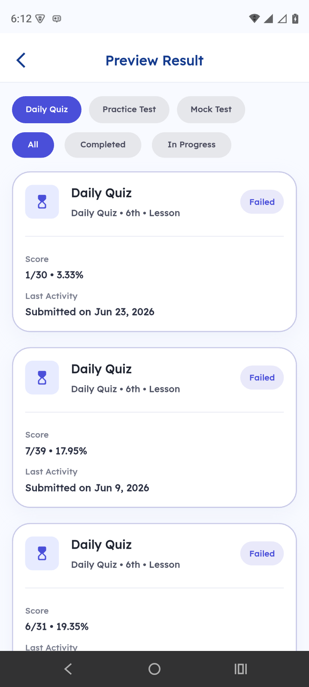
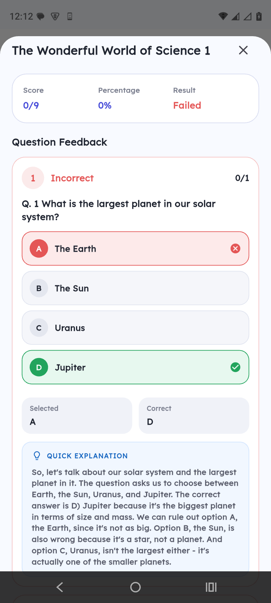
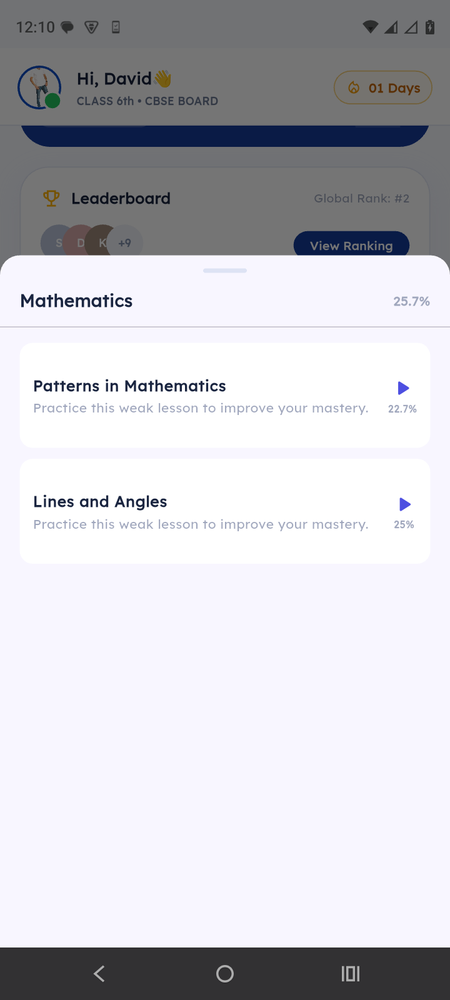
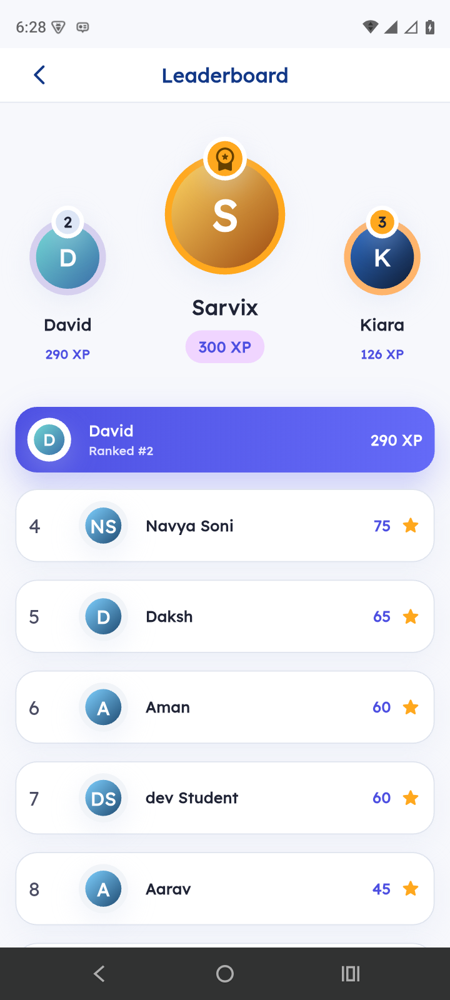

Smarter Learning.
Better Results.
An AI-powered learning app for CBSE students — full syllabus lessons, daily practice, instant doubt-clearing, and pinpoint reports that parents and teachers can actually act on.

One home screen that builds a daily study habit
The moment your child opens the app, everything that matters is right there.
- 🔥Daily streakBuilds discipline — children come back every single day.
- 📈Learning journeyActive lessons and overall progress at a glance.
- ⚡Daily quiz with bonus XPA one-tap challenge that keeps the habit going.
- 🏆Class & global rankInstant motivation to do a little better today.
02.png)
The full CBSE syllabus, subject-wise
A clean, organised study hub — no more scattered notes and random YouTube videos.
- 📚All subjects in one placeEnglish, Hindi, Maths, Science & Social Science.
- ✅Lesson completion tracking"5/6 lessons" style progress per subject.
- 📶Progress barsVisual completion that keeps children motivated.
- 🎨Kid-friendly designBright, simple cards even young students navigate easily.
03.png)
Video, notes & PDFs — all in one place
A complete lesson player so students never need to leave the app to study.
- 🎬In-app video lessonsConcepts taught clearly, right inside the screen.
- 📝Video & Notes tabsSwitch between watching and revising instantly.
- 📕Downloadable PDFsSave resources for offline study and revision.
- 🎯Take Lesson QuizTest understanding the moment a lesson ends.
04.png)
Daily practice that builds exam confidence
Three modes of practice keep knowledge sharp and exam-ready every day.
- ⚡Daily challenge5 quick questions with a 2× XP multiplier.
- 📖Practice quizzesChapter-wise, subject-focused sessions.
- ⏱️Timed mock testsReal board-exam simulation with start/end windows.
- 🔥XP rewardsEvery attempt feeds streaks & the leaderboard.
05.png)
Reports parents & teachers actually trust
Real numbers, not guesswork — full visibility into how each child is doing.
- 👨👩👧Parent-ready reportsClear progress data that builds trust and re-admissions.
- 📅Weekly analyticsDay-by-day quiz attempts & averages.
- 🗂️Complete historyDaily, practice & mock tests in one list.
- 📄Detailed resultsScore, percentage & date for every attempt.
06
Every attempt, on record
Browse all tests and drill into any one in seconds.
- 🔖Filter by typeDaily Quiz, Practice Test & Mock Test tabs.
- ✅Status filtersAll, Completed or In-Progress at a tap.
- 🎯Score & percentageClear pass/fail outcome on each card.
- 🕑Submission dateLast activity shown for every attempt.
07
An AI tutor that explains every mistake
Doubts get cleared instantly — no waiting for a teacher, no extra tuition fees.
- 💡AI Quick ExplanationSimple, step-by-step reason behind every answer.
- 🟢Right vs wrong shownCorrect answer in green, the child's pick in red.
- 📝Per-question marksClear score breakdown for each question.
- 🌐Hindi & EnglishExplanations a child actually understands.
08.png)
Knows exactly where the child is weak
The app finds the problem subjects automatically — so no weak spot goes unnoticed.
- 🎯Improvement areasWeakest subjects ranked by accuracy.
- 📊Accuracy per subjectClear percentage scores for each topic.
- ⏭️Skipped questions flaggedShows exactly what was left unattempted.
- 👆Tap to practiceJump straight into focused practice from the card.
09
Pinpoints the exact weak lessons
Not just the subject — the precise chapters dragging marks down, with one-tap practice.
- 🔍Chapter-level mastery"Patterns in Mathematics — 22.7%" — accuracy on every lesson.
- 📉Lowest-scoring lessons firstThe weakest chapters surface right at the top.
- 👆One tap to fix itPractice the exact weak lesson instantly.
- 📈Mastery that climbsWatch the percentage rise as the child improves.
10
Healthy competition keeps them coming back
Friendly rankings turn daily study into a game children want to win.
- 🥇Top-3 podiumGold, silver & bronze winners highlighted with XP.
- 📊Live ranking listEvery student ranked by total XP earned.
- ⭐Your position pinnedSee exactly where you stand at a glance.
- 🔥Motivation to returnChase the next rank with every quiz.
11Let's see it live.
Smarter learning, better results — for every child in your institute.